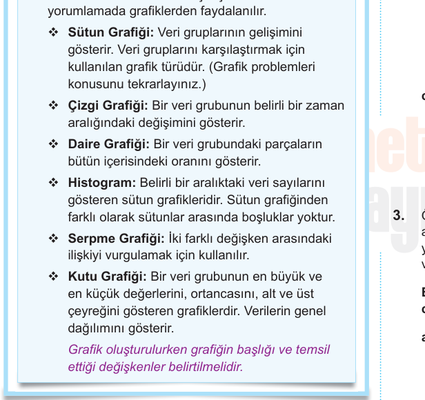
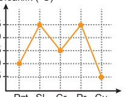
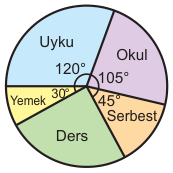
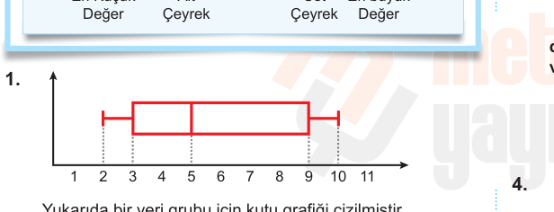
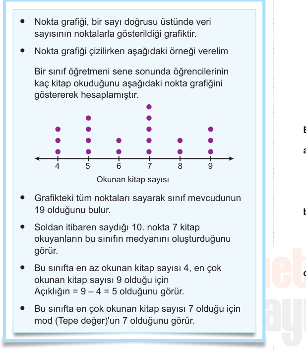
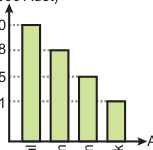
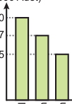
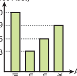
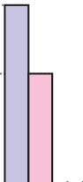
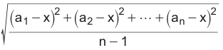

Veri Analizi ve İstatiksel Araştırma
293
Veri Analizi ve İstatiksel Araştırma
4. Aşağıdaki veri gruplarının açıklıklarını bulunuz.
a) 11; 7; 3; 5; 24 b) 3; 3; 3; 3; 3
5. Aşağıdaki veri gruplarının çeyrekler açıklıklarını
bulunuz.
a) 7, 5, 12, 11, 4, 8, 2
b) 3, 5, 7, 8, 1, 12, 21, 4
6. Denetlemeye giren beş kamyondan dördünün yük
miktarları 8, 5, 12 ve 21 tondur. Bir kamyonun yük miktarı
silinmiştir.
Bu beş kamyonun yük miktarlarından oluşan veri
grubunun açıklığı 18 ton olarak kaydedildiğine göre,
beşinci kamyonun ağırlığı kaç ton olabilir?
7. İki futbolcunun yedi maçta attığı gol sayıları aşağıdaki
gibidir.
Çağan: 2, 1, 0, 3, 5, 2, 1
Altan: 3, 5, 2, 2, 3, 2, 0
Buna göre, hangi futbolcu daha tutarlıdır?
8. Süleyman’ın bir eğitim öğretim yılında coğrafya
sınavlarından aldığı notlar aşağıdaki gibidir.
70, 65, 85, 60, 75, 65
Süleyman’ın coğrafya notlarından oluşan bu veri
grubunun standart sapması kaçtır?
9. Aşağıda iki farklı inek türünün üç gün boyunca verdiği süt
miktarları verilmiştir.
A cinsi: 5 litre, 7 litre, 3 litre
B cinsi: 4 litre, 6 litre, 5 litre
Süt üretim tesisi kurmak isteyen Erkan, hangi cins
ineği seçmesi gerektiğini aritmetik ortalama ve
standart sapma kullanarak tespit ediniz.
10. Bir sınıfta yapılan sınıf başkanlığı seçiminde başkanlığa
aday 5 öğrencinin aldığı oylar aşağıdaki gibidir.
8, 5, 7, 5, 10
Adayların aldığı oy sayılarından oluşan veri grubunun
a) Merkezi eğilim ölçüsü değerleri nelerdir?
b) Merkezi yayılım ölçüsü değerleri nelerdir?
4. a) 21 b) 0 5. a) 7 b) 6,5 6. 3 ya da 23 7. Altan
8. 4 5 9. B cinsi 10. a) Medyan: 7, Mod: 5, x = 7 b) A: 5, Ç.A.: 4 S
92
=




294
Veri Analizi ve İstatiksel Araştırma
Müşteri Sayısı
1. Yandaki grafikte bir
mağazaya sabah
saatlerinde gelen müşteri
sayıları verilmiştir.
Buna göre, aşağıdaki
soruları cevaplayınız.
a) En az ve en çok
müşterinin geldiği
saatler hangileridir?
b) Veri grubunun merkezi
eğilim ölçüleri nelerdir?
c) Veri grubunun açıklığı kaçtır?
d) Veri grubunun çeyrekler açıklığı kaçtır?
Sıcaklık (°C)
2. Yandaki grafikte bir
şehrin hafta içi sıcaklık
değerleri verilmiştir.
Buna göre,
aşağıdaki soruları
cevaplandırınız.
a) Sıcaklık değişiminin en fazla olduğu gün hangisidir?
b) Veri grubunun merkezi eğilim ölçüleri nelerdir?
c) Veri grubunun merkezi yayılım ölçüleri nelerdir?
3. Özay’ın bir günlük aktivitelerine
ayırdığı zamanların oranları
yandaki daire grafiğinde
verilmiştir.
Buna göre, aşağıdaki soruları
cevaplandırınız.
a) Özay, günde kaç saat ders çalışır?
b) Özay, gününün yüzde kaçını serbest zamana
ayırır?
c) Özay, günlük her aktiviteye ortalama kaç saat
ayırmıştır?
2. a) Cuma b) Medyan: 15, Mod: 25, x = 16 c) A: 20 Ç.A: 17,5, S = 80
3. a) 4 b) 12,5 c) 4,8
Verilerin Grafikle Gösterilmesi
• Veri Türleri: İstatistiksel bir çalışmada veriler ikiye
ayrılır.
Sürekli Veriler: Belirli bir aralıktaki bütün
değerleri alan verilerdir. Örneğin; bir şehrin
sıcaklık değerleri için alınan veriler, bütün
değerleri alarak değişir.
Sürekli veriler için çizgi grafiği kullanmak daha
uygundur.
Kesikli Veriler: Belirli bir aralıktaki her değeri
alamayan verileridir. Örneğin; bir şehrin nüfusu
için alınan veriler, her değeri almadan değişebilir.
• Grafik Türleri: Verileri karşılaştırmada ve
yorumlamada grafiklerden faydalanılır.
1. a) EA = 8:00, EÇ = 11:00 b) Medyan = 20, mod 20, x 23 = c) 20 d) 12,5

295
Veri Analizi ve İstatiksel Araştırma
b) Grup sayısı kaçtır?
c) Grup genişliği nedir?
d) Verilerin açıklığı en çok kaç olabilir?
e) Verilerin açıklığı en az kaç olabilir?
f) 40’dan çok 61’den az not alanlar sınıfın yüzde
kaçıdır?
g) En çok kaç öğrenci başarılı not almıştırr? (44 üstü)
h) En az kaç öğrenci başarısız not almıştır? (45 altı)
1.
Ağırlık (kg)
7
6
5
4
3
Boy (cm) 50 60 90 70 80
Yukarıdaki grafikte bir bebeğin doğumdan sonra
hastanede yapılan altı kontrolde elde edilen boy ve kilo
değerleri verilmiştir.
Buna göre,
a) Boy ve kilo arasındaki ilişki türü nedir?
b) Bebeğin ağırlığı kaç kilogram iken boyu uzadığı
halde ağırlığı değişmemiştir?
c) Bebek doğduğunda boyu kaç cm dir?
1. a) Pozitif Yönlü b) 4 c) 50
1. a) 15 b) 5 c) 20 d) 99 e) 61 f) 20 g) 10 h) 5
Histogram Serpme Grafiği



296
Veri Analizi ve İstatiksel Araştırma
2. Aşağıda bir öğrencinin on gün boyunca çözdüğü soru
sayıları verilmiştir.
90, 73, 82, 95, 65, 78, 80, 104, 65, 48
Öğrencinin çözdüğü soru sayılarından oluşan veri
grubu için kutu grafiğini çiziniz.
45 50 55 60 65 70 75 80 85 90 95 100 105
3. Bütün verileri birbirinden farklı 20 veriden oluşan bir veri
grubunda
a) Alt çeyrek değerden küçük kaç veri vardır?
b) Ortanca değerden küçük kaç değer vardır?
c) Üst çeyrek değerden küçük kaç değer vardır?
d) Alt çeyrek değeri ile üst çeyrek değer arasında kaç
veri vardır?
Kars
İzmir
–5 0 5 10 15 20
Şekilde Kars ve İzmir illerinin 28 çeken bir Şubat ayındaki
günlük ortalama sıcaklıklarının kutu grafiği verilmiştir.
Buna göre,
a) Şubat ayında hangi şehir genellikle daha sıcaktır?
b) Kars ilinin sıcaklık verilerinin açıklığı kaçtır?
c) Kars ilinde sıcaklığın medyanı kaçtır?
d) İzmir, ilinde sıcaklığın medyanı?
Buna göre bu veri grubu için aşağıdaki soruları
cevaplandırınız.
a) En küçük değeri kaçtır?
b) En büyük değeri kaçtır?
c) Alt çeyrek değeri kaçtır?
d) Üst çeyrek değeri kaçtır?
e) Medyanı kaçtır?
f) Açıklığı kaçtır?
g) Çeyrekler açıklığı kaçtır?
2.
45 50
48 65 79 90 104
55 60 65 70 75 80 85 90 95 100 105
3. a) 5 b) 10 c) 15 d) 10 4. a) İzmir b) 13 c) –3 d) 11
1. a) 2 b) 10 c) 3 d) 9 e) 5 f) 8 g) 6
Kutu Grafiği
• Bir veri grubundaki; en büyük değeri, en küçük
değeri, ortancayı, alt çeyreği ve üst çeyreği
gösteren grafiğe kutu grafiği denir.
• Kutu grafiği çizilirken aşağıdaki adımlar takip edilir.
I. Veri grubunu içine alan bir sayı doğrusu
çizilir.
II. En küçük ve en büyük değerler kutu
grafiğinin uç noktaları olarak işaretlenir.
III. Alt ve üst çeyrekler kutunun kenarları olarak
alınır.
IV. Ortanca kutunun içinde belirtilir.
En Küçük
En büyük
a b c d e

297
Veri Analizi ve İstatiksel Araştırma
1. 15 kişinin koştuğu bir parkurda kaç kişinin kaç saniyede
parkuru bitirdiğine dair tablo aşağıda verilmiştir.
Süre (sn) Kişi Sayısı
55 4
60 3
63 5
65 2
70 1
Buna göre, bu kişilerin oluşturduğu nokta grafiği
çiziniz.
2. Aşağıda sınıftaki herkesin girdiği Matematik yazılısından
alınan notların nokta grafiği verilmiştir.
60 65 72 78 85 95 100
Yazılıda alınan notlar
Buna göre,
a) Sınıf mevcudu kaçtır?
b) Veri grubunun mod (Tepe değer) kaçtır?
c) Bu veri grubunun medyanı kaçtır?
3. Aşağıda bir tura katılan kişilerin yaşlarına göre sayıca
dağılımını veren nokta grafiği verilmiştir.
25 27 32 35 42
Yaş
Buna göre, bu tura katılan kişilerin yaş ortalaması
kaçtır?
2. a) 22 b) 72 c) 72 3. 32
1.
55 60 63 65 70
Nokta Grafiği

298
Veri Analizi ve İstatiksel Araştırma
1. Aşağıdaki istatiksel ölçümlerden bir veri grubunun eğilim
gösterdiği değerleri tespit etmek için kullanılanları “ME”
(Merkezi eğilim), veri grubunun istikrarını tespit etmek için
kullanılanları “MY” (Merkezi yayılım) ile belirtiniz.
a) Veri grubundaki sayıların hepsinin toplanıp veri
sayısına bölünmesiyle elde edilen değer.
b) Veriler arasındaki en çok tekrar eden değer.
c) Veri grubundaki en büyük değerden en küçük
değer çıkarıldığında bulunan değer.
d) Veri grubundaki üst çeyrekten alt çeyrek çıkarılınca
bulunan değer.
e) Veriler küçükten büyüğe sıralandığında tam ortada
kalan değer.
f) Bir veri grubundaki verilerin aritmetik ortalamaya
yakınlığının gösteren değer.
2. Bir dolmuşun 15 sefer yaptığında taşıdığı yolcu sayıları
aşağıda verilmiştir.
18, 20, 15, 13, 18, 22, 17, 25, 18, 19, 20, 14, 15, 17, 19
Bu verilere ait aşağıdaki ölçüm değerlerini bulunuz.
a) Aritmetik ortalama
b) Tepe Değer
c) Ortanca
d) Açıklık
e) Çeyreler açıklığı
3. Aşağıda iki aracın bir depo benzinle aldığı yollar farklı
günlerde kaydediliyor.
A Marka: 400, 420, 470, 430, 440, 430
B Marka: 430, 410, 400, 440, 440, 420
Buna göre, hangi marka aracın benzin tüketimi daha
tutarlıdır?
4. Bir basketbol takımındaki dört kişinin boy uzunlukları
160 cm, 170 cm, 175 cm ve 165 cm dir.
Takımın boy ortalamasının 168 cm olması için takıma
alınacak 5. kişinin boy uzunluğu kaç cm olmalıdır?
5. Bir turist kafilesindeki 15 bayanın yaş ortalaması 22, 10
erkeğin yaş ortalaması 25 tir.
Buna göre, bu turist kafilesinin yaş ortalaması kaçtır?
6. Aşağıda bir öğrencinin altı sınavdan aldığı notlar
verilmiştir.
60, 75, 60, 80, 85, 90
Buna göre, bu notlara ait standart sapmanın değeri
kaçtır?
7. Tuba ve Leyla aynı yayın evinde çalışan iki dizgicidir.
Bu iki dizgicinin 5 dakika boyunca her bir dakikada
yazabildikleri kelime sayıları aşağıda tabloda verilmiştir.
Tablo: Dizgicilerin yazdıkları kelime sayıları
Leyla 120 100 130 110 100
Tuba 110 115 120 110 115
Bu verilere ait standart sapmaları tespit ederek hangi
dizgicinin daha istikrarlı olduğunu tespit ediniz.
1. a) ME b) ME c) MY d) MY e) ME f) MY 2. a) 18 b) 18 c)18 d) 12 e) 5
3. B Marka 4. 170 5. 23,2 6. 4 10
7. Leyla: 170 > Tuba: , 142 5 Tuba daha istikrarlıdır.

299
Veri Analizi ve İstatiksel Araştırma
8. Aşağıdaki verilerden sürekli olanları “S”, kesik olanları
“K” ile belirtiniz.
a) Bir sınıftaki her bir branşı seçen öğrenci sayılarını
belirten grafikteki veriler.
b) Milli takımdaki güreşçilerin kütlelerini belirten grafikteki
veriler.
c) Bir bebeğin doğumundan itibaren kütlesindeki değişimi
gösteren grafikteki verilir.
d) Herhangi bir aralıktaki verilmeyen değerler hakkında
fikir veren grafikteki veriler.
e) Herhangi bir aralıktaki her değeri alamayan grafikteki
veriler.
9.
Öğrenci Sayısı
Yukarıdaki histogramda 80 soruluk Matematik sınavında
bir sınıfın doğru cevap sayıları gösterilmiştir.
Buna göre, aşağıdaki soruları cevaplandırınız.
a) Sınıfta kaç öğrenci vardır?
b) Grup sayısı kaçtır?
c) Grup genişliği nedir?
d) Verilerin açıklığı en fazla kaç olabilir?
e) Verilerin açıklığı en az kaç olabilir?
f) Doğru sayısı 35 - 45 arasında olan en az kaç
öğrenci olabilir?
g) Doğru sayısı 35 - 45 arasında olan en çok kaç
öğrenci olabilir?
h) Sınıftaki öğrencilerin yüzde kaçı 52 üzerinde doğru
yapmıştır?
10.
İngilizce
100
90
80
70
60
50
Matematik 50 60 70 80 90 100
Yukarıdaki grafikte bir öğretim yılında bir öğrencinin
İngilize ve Matematik sınavlarından aldığı notlar sırasıyla
gösterilmiştir.
Bu öğrenci için aşağıdakilerden doğru olanları “D”,
yanlış olanları “Y” ile belirtiniz.
a) Öğrenci, yıl içerisinde matematik dersine çalıştığı
zamanı arttırmıştır.
b) Öğrencinin, İngilizce notları ile Matematik notları
arasında pozitif bir ilişki vardır.
c) Öğrencinin hem İngilizce hem de Matematik notunu
A
70 75 80 85 90 95 100
Yukarıdaki kutu grafikleri, bir okuldaki 23 er öğrencisi
bulunan 12. sınıf, A ve B şubelerinin bir matematik
sınavında aldığı notlara göre oluşturulmuştur.
Buna göre, aşağıdaki soruları cevaplayınız.
a) A sınıfının notlarının açıklığı kaçtır?
b) Çeyrekler açıklığına göre hangi sınıftaki
öğrencilerin öğrenme seviyeleri birbirine daha
yakındır?
c) 85 ile 95 arasında not alan öğrenci sayısı hangi
şubede daha azdır?
8. a) K b) K c) S d) S e) K 9. a) 25 b) 5 c) 14 d) 69 e) 43 f) 0 g) 13 h) %36
10. a) D b) Y c) D 11. a) 25 b) A c) B


300
Veri Analizi ve İstatiksel Araştırma
1. Şekildeki grafikte bir sınıftaki bütün öğrencilerin matematik
sınavından aldıkları notlara göre dağılımları verilmiştir.
8
10
6
4
2
1 2 3 4 5 Not
Öğrenci Sayısı
Öğretmen, 3 ün üstünde not alan öğrencileri başarılı kabul
etmektedir.
Öğretmenin değerlendirmesine göre sınıfın yüzde kaçı
başarısızdır?
A) 40 B) 45 C) 50 D) 55 E) 60
2. Aşağıda bir veri grubuna ait bir nokta grafiği verilmiştir.
1 2 3 4 5 6 7
Buna göre,
I. Bu veri grubunun açıklığı 6'dır.
II. Bu veri grubunun mod (Tepe) u 3'tür.
III. Bu veri grubunun medyanı 4'tür.
ifadelerinden hangileri doğrudur?
A) Yalnız I B) Yalnız II C) I ve II
D) I ve III E) I, II ve III
3. Veri grubunda sayılar küçükten büyüğe doğru
sıralandığında gruptaki terim tek ise ortadaki sayıya,
çift ise ortadaki iki sayının aritmetik ortalamasına o veri
grubunun medyanı (ortanca değeri) denir.
10
12
8
6
4
60 70 80 90 100 Not
Öğrenci Sayısı
Buna göre, öğrencilerin aldığı nota bağlı veri
grubunun medyanı kaçtır?
A) 60 B) 70 C) 80 D) 90 E) 100
4. x1, x2, x3, …, xn elemanlarından oluşan bir veri grubunun
aritmetik ortalaması x iken standart sapması (S)
formülü ile hesaplanır.
Cem, bir eğitim öğretim yılında Fizik sınavlarından
aşağıdaki notları almıştır.
85, 80, 85, 80, 90, 90
Cem’in Fizik sınav notlarının standart sapması
aşağıdakilerden hangisidir?
A) 2 B) 5 C) 3
D) 2 5 E) 5 2
1.E 2.C 3.C 4.D





301
Veri Analizi ve İstatiksel Araştırma
5. Online kitap satan bir internet sitesinin stoğunda Eylül
ayının başında 10.000 adet Metin Yayınları Parkur kitabı
bulunmaktadır.
Bu kitabın 3000 tanesi ilk ay, 5000 tanesi ilk iki ay ve 9000
tanesi de ilk üç ay içinde satılıyor.
Buna göre, bu internet sitesinin stoğunda bulunan
Metin Yayınları Parkur kitabının miktarının aylara göre
dağılımını gösteren grafik aşağıdakilerden hangisidir?
A) B)
Parkur
(x1000 Adet)
Aylar
Eylül
Ekim
Kasım
Aralık
Parkur
(x1000 Adet)
Aylar
Eylül
Ekim
Kasım
Aralık
C) D)
Parkur
(x1000 Adet)
Aylar
Eylül
Ekim
Kasım
Aralık
E) Parkur
(x1000 Adet)
Aylar
Eylül
Ekim
Kasım
Aralık
Parkur
(x1000 Adet)
10
6. Aşağıdaki grafikte öğrencilerin günlük matematik dersine
çalışma süresine bağlı olarak aldıkları notlar verilmiştir.
100
95
90
85
80
Not
günlük
çalışma
süresi 1 2 3 4 5
Grafiğe göre aşağıdakilerden hangisi söylenemez?
A) Günde 1 saat çalışan öğrenci 80 ile 85 arasında not
almıştır.
B) Öğrencilerin günlük çözdüğü soru sayısı matematik
başarısını arttırmıştır.
C) Öğrencilerin günlük matematik dersine çalışma süreleri
ile matematik sınavından aldığı notlar arasında pozitif
yönlü bir ilişki vardır.
D) 3 saat çalışan öğrenci ile 4 saat çalışan öğrenci aynı
notu almıştır.
E) En yüksek notu 5 saat çalışan öğrenci almıştır.
7. Bir veri grubundaki sayılar küçükten büyüğe doğru
sıralandığında veri sayısı tek ise ortadaki sayıya, veri
sayısı çift ise ortadaki iki sayının aritmetik ortalamasına
o veri grubunun medyanı (ortanca), veri grubunda en çok
tekrar eden sayıya ise o veri grubunun modu (tepe değer)
denir.
Bir dolmuşun 15 sefer yaptığında taşıdığı yolcu sayıları
aşağıda verilmiştir.
18, 20, 15, 13, 18, 22, 17, 25, 18, 19, 20, 14, 15, 17, 19
Buna göre, bu verilere ait aşağıdakilerden hangisi
doğrudur?
Medyan Mod ––––––– ––––––
A) 14 18
B) 18 16
C) 16 18
D) 16 16
E) 18 18
5.B
6.B 7.E





Bu bölümdeki sorular TYT, AYT ve MSÜ sınavlarında çıkmış
ve basın aracılığıyla paylaşılmış bazı sorulardan esinlenerek
hazırlanmıştır. Bu sorular çıkmış soruların bire bir aynısı değildir.
302
1. Başlangıçta kumbarasında 200 TL’si olan Ali’nin 5 hafta
boyunca kumbarasına attığı ve kumbarasından aldığı para
miktarları grafikte gösterilmiştir.
100
Atılan / Alınan Para
90
80
70
50
20
1. hafta
2. hafta
3. hafta
4. hafta
5. hafta Haftalar
: Kumbaraya atılan para : Kumbaradan alınan para
Buna göre Ali’nin 5 hafta sonra kumbarasındaki para
miktarı kaç TL’dir?
A) 180 B) 250 C) 300 D) 310 E) 320
1.C


303
1. Aşağıdaki sütun grafiğinde bir tur teknesinin 4 hafta
boyunca teknesinde taşıdığı yolcu sayısı verilmiştir.
Kişi Sayısı
Haftalar
1. Hafta
32
34
36
38
2. Hafta 3. Hafta
4. Hafta
Buna göre, 4 hafta boyunca toplamda kaç yolcu
taşınmıştır?
A) 104 B) 125 C) 130 D) 135 E) 142
2. Aşağıda bir veri grubuna ait kutu grafiği verilmiştir.
10 20 30 40 50 60 70
Grafiğe göre aşağıdakilerden hangisi doğrudur?
A) En küçük değer 30’dur.
B) En büyük değer 60’dır.
C) Aritmetik ortalama 40’dır.
D) Açıklık 60’dır.
E) Ortanca değer 50’dir.
3. 3, 4, 9, 10, 14
A) (2, 3) B) (3, 4) C) (4, 5)
D) (5, 6) E) (6, 7)
4. Aşağıda yıllara göre Metin Okullarına cinsiyete göre
kayıt yaptıran öğrenci sayılarını gösteren sütun grafiği
verilmiştir.
2021
Öğrenci Sayısı (x100)
5
4
3
2
1
2023 2025
6
7
2022 2024 Yıllar
Erkek
Kız
Hangi yıl kayıt yaptıran toplam öğrenci sayısı kayıt
yaptıran kız öğrenci sayısının katıdır?
A) 2021 B) 2022 C) 2023
D) 2024 E) 2025
1.E 2.D
3. C 4.D




304
5. a1 a2 a3 … an sayı dizisinin aritmetik ortalaması x ise
standart sapması
S
biçiminde bulunur.
Buna göre,
I. 2, 3, 4, 5, 6
II. 5, 5, 5, 5, 5
III. 2, 4, 6, 8, 10
veri grubunun standart sapmasının küçükten büyüğe
sıralaması aşağıdakilerden hangisidir?
A) III < II < I B) II < I < III C) II < III < I
D) I < II < III E) I < III < II
6. Aşağıdaki grafik bir ilçedeki A, B, C ve D okullarındaki
öğretmen sayılarının okullara göre dağılımını
göstermektedir.
70
A B C D
50
30
Öğretmen Sayısı
Okullar
Okuldaki öğretmen sayıları okullarına göre bir daire
grafiği ile gösterildiğinde C okulunu gösteren daire
diliminin merkez açısı kaç derecedir?
A) 45 B) 50 C) 54 D) 60 E) 90
7. Bir sınavdaki genel yetenek, genel kültür ve eğitim bilimleri
bölümündeki her sorunun puanı sırasıyla a, b ve c dir.
Elif, Doğa ve Ercan'ın bu sınavda çözdükleri soru sayıları
aşağıdaki grafikte verilmiştir.
60
30
Elif Doğa Ercan
Soru Sayısı Genel Yetenek
Genel Kültür
Eğitim Bilimleri
a + b + c = 4,7 olduğuna göre, kişi başı ortalama
kaç puan almışlardır?
A) 188 B) 186 C) 184 D) 182 E) 180
8. Aşağıdaki histogramda 80 soruluk matematik sınavında bir
sınıfın doğru cevap sayıları gösterilmiştir.
Öğrenci Sayısı
Buna göre,
I. Verilerin açıklığı en fazla 69’dur.
II. Doğru sayısı 35 – 45 arasında olan en çok 15
öğrenci vardır.
III. Sınıftaki öğrencilerin %36’sı 52 sorudan fazla doğru
yapmıştır.
ifadelerinden hangileri doğrudur?
A) Yalnız I B) Yalnız II C) Yalnız III
D) I ve III E) II ve III
5.B 6.C 7.A 8.D


305
9. Aşağıda Aysun, Beliz ve Cemil isimli üç öğrenci ile ilgili
• Şekil 1'deki grafikte üç öğrencinin 1 yılda okuması
gereken kitap sayısı
• Şekil 2'deki grafikte ise bu üç öğrencinin 1 yılda
okuduğu kitap sayısı
gösterilmiştir.
10
15
20
Kitap Sayısı (Adet)
Öğrenci
Şekil 1
12
18
Kitap Sayısı (Adet)
Öğrenci
Şekil 2
Buna göre,
I. Aysun ve Beliz okumaları gereken kitap sayısına
göre aynı oranda kitap okumuşlardır.
II. Okuması gereken kitap sayısına göre en düşük
oran Cemil'dedir.
III. Okuması gereken kitap sayısına göre, Cemil
Beliz'den daha fazla oranda kitap okumuştur.
ifadelerinden hangileri doğrudur?
A) Yalnız I B) Yalnız II C) I ve II
D) I ve III E) II ve III
10. Aşağıdaki grafikte bir öğretim yılında bir öğrencinin
İngilize ve Matematik sınavlarından aldığı notlar sırasıyla
gösterilmiştir.
İngilizce
100
90
80
70
60
50
Matematik 50 60 70 80 90 100
Buna göre,
I. Öğrenci, yıl içerisinde matematik dersine çalıştığı
zamanı arttırmıştır.
II. Öğrencinin, İngilizce notları ile Matematik notları
arasında pozitif bir ilişki vardır.
III. Öğrencinin hem İngilizce hem de Matematik notunu
arttırdığı sınav olmuştur.
ifadelerinden hangileri doğrudur?
A) Yalnız I B) Yalnız II C) Yalnız III
D) I ve III E) II ve III
11. Aşağıda bir okuldaki sınıfların sınıf mevcuduna göre
sayılarını veren nokta grafiği verilmiştir.
15 20
Sınıf mevcudu
24 25 30
Buna göre,
I. Okulda toplam sınıf sayısı 14'tür.
II. Bu veri grubunun mod (Tepe Değer) u 20'dir.
III. Bu veri grubunun açıklığı 15'tir.
ifadelerinden hangileri doğrudur?
A) Yalnız I B) Yalnız III C) I ve II
D) I ve III E) I, II ve III
9.C
10.D 11.D


306
12. Aşağıda verilen kutu grafiği 9A sınıfının matematik
sınavına aittir.
a 65 70 78 95 Puan
Buna göre, bu veri grubunun açıklık değeri, medyan
değerinden 20 eksik ise Matematik sınavından alınan
en düşük not kaçtır?
A) 35 B) 40 C) 45 D) 50 E) 55
13. Her öğrencinin yalnız bir enstrüman çalabildiği bir sınıfta
aşağıdaki grafik verilmiştir.
Kişi Sayısı
Enstrüman Gitar
2
4
6
8
Saz Piyano Keman
Buna göre, bu enstrümanlar bir daire grafiğinde
gösterildiğinde piyanonun merkez açısı kaç olur?
A) 36 B) 72 C) 108 D) 144 E) 160
14. Aşağıda, Nehir dışında tüm öğrencilerin katıldığı
matematik sınavına ait süre bilgisinin olduğu nokta grafiği
verilmiştir.
45 50 55
Süre (dakika)
57 65 75
Nehir iyileşip okula geldiğinde öğretmeni aynı sınavı
Nehir'e uygulamış Nehir ise bu sınavı arkadaşların
sürelerinin olduğu veri grubundaki medyan değerinden
büyük, mod (tepe değer) değerinden küçük bir sürede
tamamlamıştır.
Buna göre, Nehir bu sınavı kaç dakikada
tamamlamıştır?
A) 48 B) 54 C) 56 D) 58 E) 67
12.C 13.B
14.C